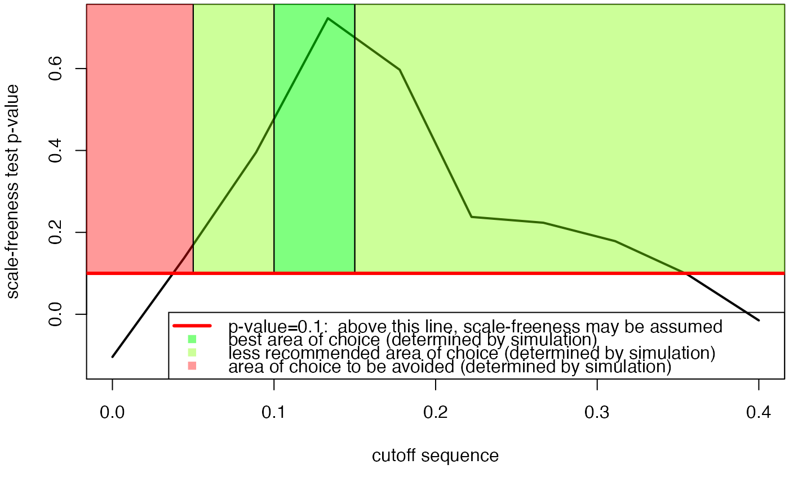

Allows estimating the best cutoff. For a sequence of cutoff, the p value corresponding to each cutoff value of the sequence. Mainly recommended for single time cascade networks. To achieve more sparsity in other settings, please use a fiiting function based on the stability selection or selectboost algorithms.
# S4 method for network cutoff(Omega, sequence = NULL, x_min = 0)
| Omega | a network object |
|---|---|
| sequence | a vector corresponding to the sequence of cutoffs that will be tested. |
| x_min | an integer ; only values over x_min are further retained for performing the test. |
A list containing two objects :
the p values corresponding to the sequence of cutoff
the smoothed p value vector, using the loess function
Bertrand Frederic, Myriam Maumy-Bertrand.
#> [1] "This computation may be long" #> [1] "1/10" #> [1] "2/10" #> [1] "3/10" #> [1] "4/10" #> [1] "5/10" #> [1] "6/10" #> [1] "7/10" #> [1] "8/10" #> [1] "9/10" #> [1] "10/10" #> [1] 0.000 0.000 0.078 0.970 0.591 0.050 0.378 0.179 0.054 0.004#> $p.value #> [1] 0.000 0.000 0.078 0.970 0.591 0.050 0.378 0.179 0.054 0.004 #> #> $p.value.inter #> [1] -0.10420437 0.13779581 0.39526849 0.72296312 0.59703284 0.23771400 #> [7] 0.22354394 0.17858763 0.09799055 -0.01492960 #> #> $sequence #> [1] 0.00000000 0.04444444 0.08888889 0.13333333 0.17777778 0.22222222 #> [7] 0.26666667 0.31111111 0.35555556 0.40000000 #>#See vignette for more details # }